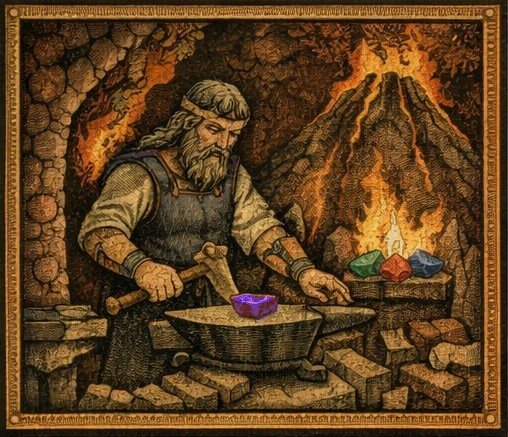

Chroniques du Vieux Royaume
Accueil
Journal
Personnages
Lieux
Quêtes
Histoire
Mythes & religions
Langues
Jaworski
Galerie
Liens externes
|
Fiches ↗
Résumé PDF ↗
Mythes & religions
Le panthéon du Vieux Royaume
La Déesse Douce
Le Resplendissant
La Vieille Déesse
Le Desséché
Aquilo
Bœsus
Gullweig
Ululata

La légende du Vin de Vanaël
Les quatre gemmes de Wayland
Les Ascètes Éternels